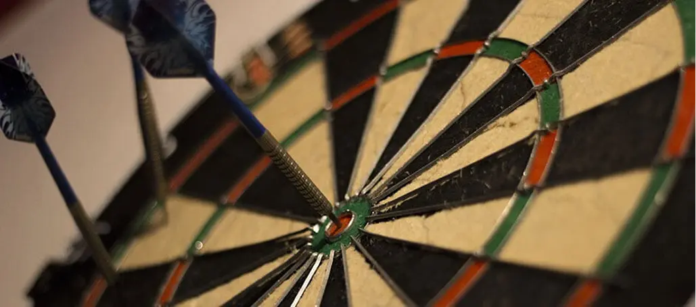

Dart
Dart i København
Leder du efter et sted i København, hvor du kan spille dart i afslappede og hyggelige omgivelser? Så kig forbi Pub & Sport – en klassisk sportsbar midt i byen, hvor dart og god stemning går hånd i hånd. Dart forbindes med pubhygge, og det forstår vi godt. Tag en øl i baren, find en modstander og nyd en omgang dart på din bytur. Pub & Sport har i årevis været en af de mest populære dartsteder i byen – og vi glæder os til at se dig.
Dart hos Pub & Sport
Hos os finder du tre dartskiver og masser af plads til sjove dueller mellem venner, kærester eller kollegaer. Et spil varer 59 minutter og koster 60 kr. Dartpilene henter du i baren, når du har betalt, og så er du klar. Du kan booke en skive samme dag i baren – eller ringe i forvejen, hvis du vil være sikker. Det er dart, som det skal være: simpelt, sjovt og socialt.
Reglerne for Dart
Der er forskellige spilleregler for dart. Her vil vi forsøge at opridse de mest kendte regler, så du er godt klædt på til dit næste spil dart i København hos Pub og Sport. I alle regler for dart har hver spiller 3 dartpile, som kastes, når det er deres tur. Hver tur kaldes et kast – så egentlig består et kast i dart af tre enkeltstående kast.
Dart - Hvem starter?
Hvis i ikke lige kan blive enige om, hvem der skal starte, er det typisk, at man spiller om det. I kan spille ”middle for diddle”. Her kaster hver spiller en dart, og den, som kommer tættest på bulls eye, vinder og har dermed lov til at starte. I kan selvfølgelig også trække lod, men det er måske ikke lige såudfordrende.
Dart - 501
Reglerne for et spil 501 dart er forholdsvis simple. Hver spiller starter med 501 point, og så gælder det om at komme ned til præcis nul point først og med færrest pile. Det lyder rigtig simpelt, men kan være overraskende svært. Den sidste dartpil skal placeres i en double elleren bullseye.
Mickey Mouse Dart
Mickey Mouse dart kaldes også cricket dart. I Mickey Mouse dart er det kun tallene fra 15 til 20 samt double, triple, bull og bulls eye, der bruges. Spillet går i alt sin enkelthed ud på at ramme hver nummer tre gange. Hvis du rammer en double, tæller det som to gange, og en triple for tre gange.
Jorden rundt
Jorden rundt burde måske have heddet skiven rundt, for det er det, spillet går ud på: at nå hele dartskiven rundt. Man starter i 1 så 2 så 3 og så videre ind til tyve og slutteligt bull. Den der først når bull har vundet. Rammer man i løbet af spillet en double springes det næste felt over. Rammer man en treble springes de næste to felter over. Der findes mange flere spilmuligheder og spilleregler for dart end de ovennævnte – vi har her blot nævnt de mest populære. Kom forbi Pub & Sport, hvis du har mod på et spil darti København.